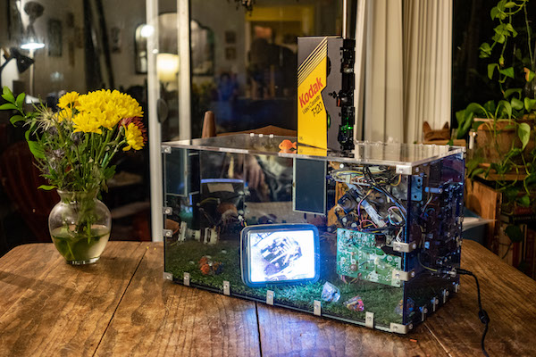

Emma Dickson
About
Selected Conservation Projects
Ten Thousand Cents
I was subcontracted by Small Data Industries and the Cooper Hewitt to restore Aaron Koblin and Takashi Kawashima.'s piece 10,000 Cents (2008)
Tall Ships
Code Analysis/Documenation and Restoration of Gary Hill's Tall Ships (1992) for Small Data Industries
Code Analysis & Documentation for The Cooper Hewitt
I was subcontracted by Small Data Industries to produce seven in depth Treatment Assesments of pieces held by the Cooper Hewitt.
net.flag
I was a part of the team that executed the 2019 Restoration of Mark Napier's net.flag (2001) for the Guggenheim. Visit the restored site here!
B R A N D O N
I was a part of the team that executed the 2017 Restoration of Shulea Cheang's BRANDON (1998-1999) for the Guggenheim. Visit the restored site here!
Selected Articles/Podcasts/Talks
Articles
Restoring Shulea Cheang's BrandonRestoring Mark Napier's net.flag
Talks
Guggenheim x NYU - Restoring Collection of Shu Lea Cheang's BrandonBrandon (1998–99) by Shu Lea Cheang. A video navigation of the restored web artwork
Podcasts
Art and Obsolescence Interview with Shulea CheangArt and Obsolescence Interview with me
Workshops
A Recipe for Analyzing a Computer-based ArtworkBuild Guides
VHS Camera Circuit BendingSelected Exhibitions
Mixed Connections
Mixed Connections re-combines and scrambles actual craigslist missed connections posts to explore identity and longing on the net.
Featured in Digital America Issue No. 11
Featured in maps-dna-and-spam
Featured in OBJECTIFIED 2019
Tools
508 Loop Detected
Shoutout to Ross Grady who really did the heavy lifting on this one
508 Loop Detected Is a hardware collaboration project that resulted in a rgb based visual synth. I've used it in several local performances.
Residencies
Signal Culture Winter ToolMaker 2019
Sculpture
Closed Circuit
Closed Circuit is an ongoing series of sculptures where tv's are forced to experience introspection.


Commissions
Tinkerer's Aquarium
Mort